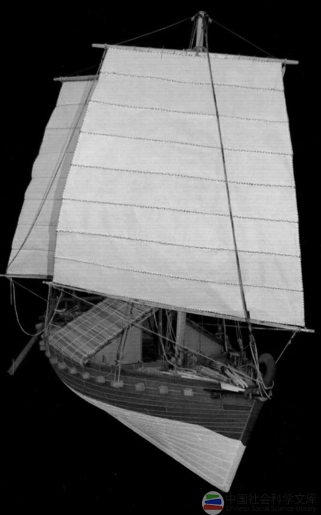

6世纪前后，日本处在由奴隶制向封建制转化时期，摄政的圣德太子怀着万事悉仿效之心，向中国派遣各类使者，这就是所谓的遣隋使及以后的遣唐使。 这样，中日睦邻航海进入了新的历史时期。
从公元600年起，自南北朝以后中断了百余年的中日两国官方交往重新恢复，这一年，日本向中国派出了第一批遣隋使。 至614年的十五年间，中日双方使节往来共五次，应该是相当频繁的。彼时，正是中国的隋朝。虽然隋朝在历史大舞台上仅仅停留了短短的三十几年， 但它在华夏历史上却被视为一个不容忽视的王朝。它那似乎在漫不经心中上演的一切，有着承前启后的作用。
一方面，隋朝在完成了天下统一的大业后，承继南北朝时的兴佛、礼佛、敬佛举措，重新大举宏扬佛法，让自周武帝灭佛后处于相对低潮的佛教重新兴盛起来， 并使之在唐代进入了一个黄金时代。另一方面，隋朝文帝为安定天下，制定了许多新的制度。可以说，唐朝盛世华章的书写，是与隋朝奠定的基础分不开的。 而且唐高祖和隋炀帝杨广还有亲属关系，因此，从某种程度上说唐朝是隋朝的延伸，基于此，一些史书常将隋朝和唐朝并称为“隋唐”。
隋朝统一天下之际，日本政局也发生了变化。推古天皇（593年-628年）在位，圣德太子摄政。圣德太子自幼就十分聪慧， 早年即受中国文化熏陶，且尊奉佛法，在日本大兴佛教。他摄政后，在推古天皇的支持下，进行政治改革，并借用儒学的道德观念、 阴阳五行学说的自然规律理论阐明王权、君主制度的合法性。
603年，日本确立了冠位十二等制度，引用了儒学的五德来区分官阶，冠位十二等表示干支十二属性，乃天地之循序。604年，颁布《宪法十七条》，为何是十七条？ 这是因为按照阴阳五行学说的说法，阴的极数为八，阳的极数为九，十七乃阴阳之和、天地之道。《宪法十七条》中还广泛地引用了中国的儒家、法家、道家的典故或成语。
当圣德太子了解到隋朝统一了天下，而且国势日益隆盛，是“礼仪之国”时，一改以往的强硬外交政策，开始派遣隋使前往中国，恢复邦交。
唐船黑石号 中国考古学百年史：1921—2021 第四卷
《隋书‧倭国传》曾记载了公元600年日本遣隋使与隋文帝的对话。日本使者向隋文帝介绍说日本天皇“以天为兄，以日为弟”，天未亮就开始处理朝政，太阳一出来就停止工作，交给“弟弟太阳”。 隋文帝表示“这没有什么道理”，训令改变这种做法。不过，日本使者是否回国后转达了训令，没有人知道，但关于隋文帝“重兴佛法”等，使者一定回国做了汇报。
随着日本的发展，圣德太子开始谋求与隋朝建立平等的外交关系。不过，对于中国而言，日本的遣隋使依旧被视为“贡使”，双方的“碰撞”就不可避免地出现了。
607年，圣德太子派遣与天皇有血缘关系的豪族小野妹子、汉族归化人后裔鞍作福利为第二批遣隋使，带着数十名僧侣前往中国，并向大隋递交国书。 随团的数十名僧人，可以说是日本历史上派出的第一批留学生，他们的主要目的是来学习佛法。
此次日本遣隋使递交的国书中写道：“日出处天子致书日没处天子，无恙。”显然，曾经仰视、尊崇、请封的“日出处”的日本天皇开始渴望与“日没处”的中国皇帝平起平坐。 《隋书‧倭国传》记载，隋炀帝看到这样的国书很不高兴，但他只是命令鸿胪卿：“蛮夷书有无礼者，勿复以闻。”就是以后不要把这样无礼的国书给他看，但是对于日本使团仍热情接待。
“黑石号”出水的长沙窑瓷盘 中国考古学百年史：1921—2021 第四卷
在隋朝存在的短短三十年里，日本朝廷先后四次派出了使节团和留学生，其学习的积极性由此可见一斑。在隋朝之后的唐朝，日本派往中国的使团和留学生也更多。 派遣隋使和留学生除了加强了与中国的联系，还可以学习中国的制度、佛法等各个方面，同时，隋朝的典章文物等也直接或间接传入日本，促进了日本飞鸟文化的形成。 飞鸟文化的核心是佛教。前文说过，圣德太子笃信佛教，而隋朝则大兴佛教，日本在佛经、佛寺等方面深受南北朝和隋朝影响。
此外，日本留学生通过在中国的长期学习，返国后，纷纷要求仿效中国，实行变革，这才有了后来的大化改新等变革。而中国对日本的巨大影响在随后走来的唐朝中更为彰显